Beta Readers
Readers you invent, and a chat with them about your book. You describe a persona (a name, an icon and a few lines about how the person reads and what they care about), and the model plays them: it reacts to the parts of your story as that reader would, alone or in a group that argues with each other. Nothing the readers say is part of the book.
The Beta Readers tab
The left sidebar of the story editor gets a Beta Readers tab, next to Outline. It has a tab for every open chat of the book. The + starts a chat, and the menu (⋮) next to it has:
The chats are saved with the book, so they are in its backups.
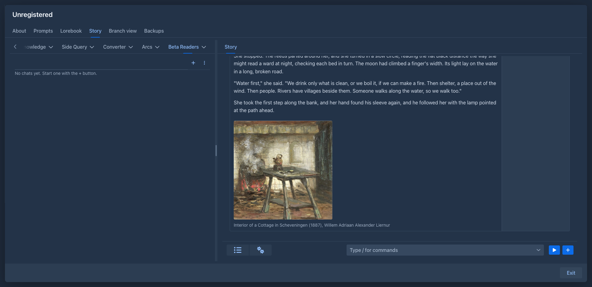
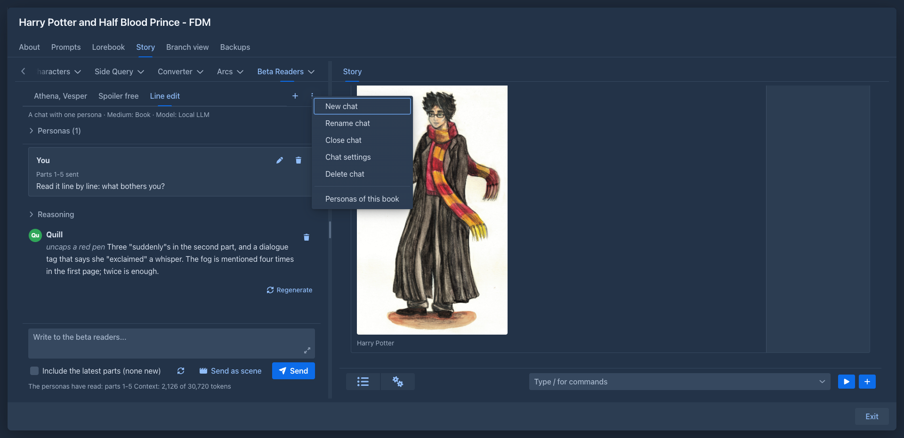
Personas
A persona has a name, a description (what the model plays: how the persona reads, what they like and what annoys them) and an optional icon, an image scaled down to a small size. Without an icon the persona is a circle with the first letters of the name.
The personas of your account are the persona library in Settings → Extension Settings → Beta Readers, started with six readers: Athena, Vesper, Ember, Quill, Nox and Sable. Edit personas opens the library in a window where you can add, edit, copy, delete and reorder personas, upload their icons and Add the starter personas the library is missing. The changes are applied with Save, and Cancel throws them away.
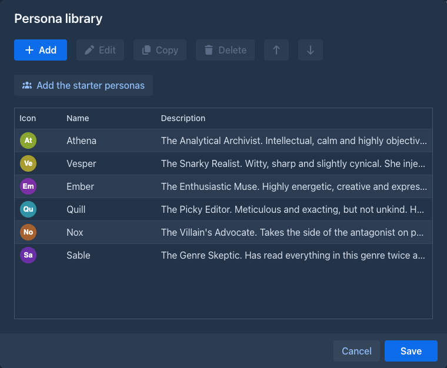
A book can have personas of its own: Personas of this book in the menu of the chats opens the same window with the personas that only this book offers. They are marked (this book) when you choose them for a chat.
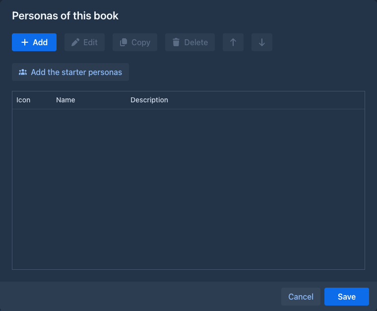
Write with the model in the window of a persona does the writing for you: describe the persona in a few words (a reader who only cares about who did it and why), press the button, and the model fills the Name and the Description in the style of the library. They are only fields: change them, or write again, and Save when they are right. The model that writes is the one of the chats (the one of the book for the personas of a book, the one in the settings of the plugin for the library, else your default model); the names already in the list are told to it so it does not take one.
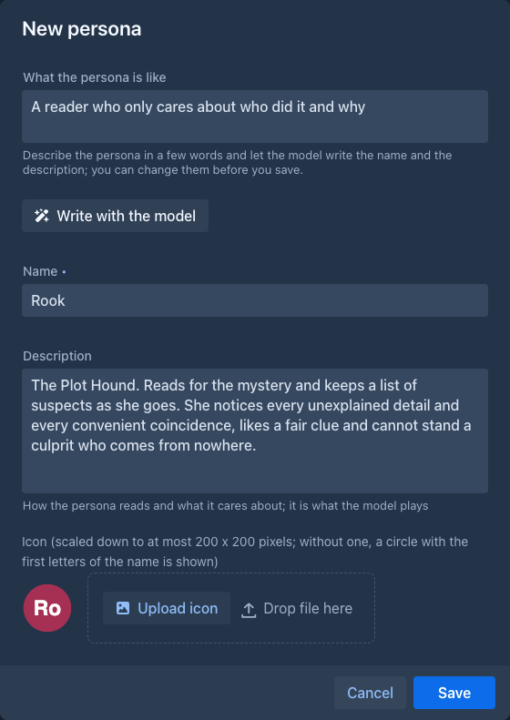
A chat keeps a copy of its personas, so a change in the library does not change a chat that has begun; the copy is changed when you ask
(see
Starting a chat
+ opens the window of a new chat.
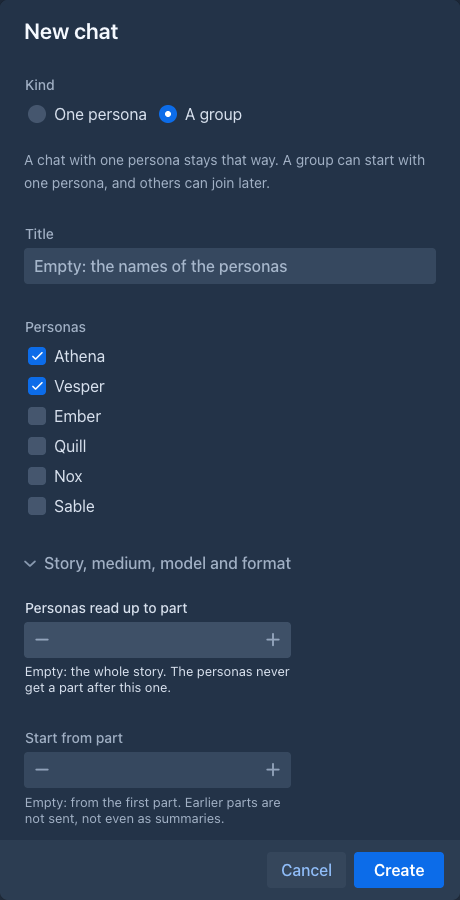
The folded part, Story, medium, model and format, holds the
A chat with one persona is a conversation between you and that persona. A group is a conversation of all the personas present with you and with each other: one reply can have several of them talking, one after another, and they may disagree, tease each other and build on each other's points. A message in the reply can also be a narration (Narrator): a short description of what the persona does.
Talking
Write into the box at the bottom and press Send; the answer appears as it is written, and Stop (the button is Stop while the model answers) cuts it short. One reply is one turn of the model: the thinking of the model, when it sends one (a closed Reasoning section; a model that does not think shows none) and the messages of the personas, each with what they do and what they say.
Sending a scene
Send as scene (next to Send) sends the text as a scene instead of something you say: a change of scene (The lights go out and the bar
falls silent.), or a description of what you do (I put the manuscript on the table and wait.). It shows as a Scene card in the history
and the personas react to it as it happens, like to a message. Use the scene of the chat (see
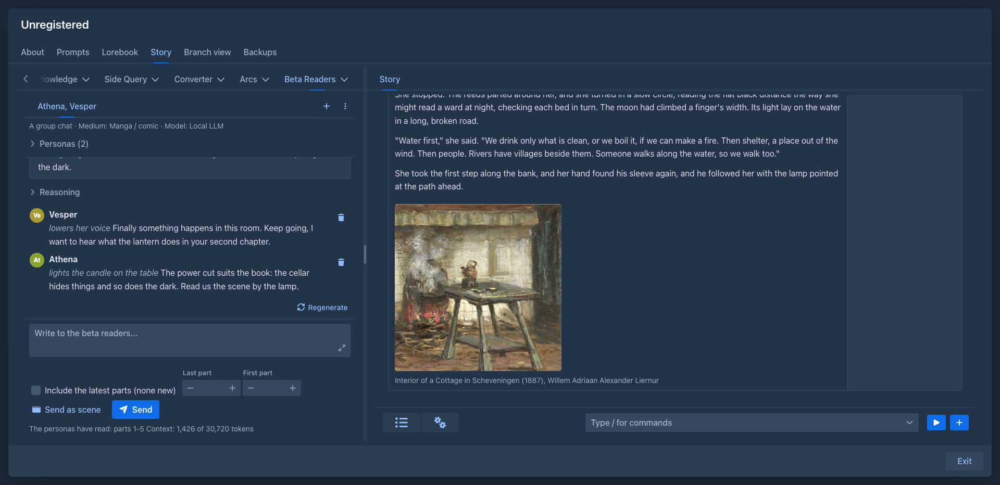
The personas of the group are told who is present at the end of your last message only (nothing about it is saved), so adding or removing a persona never changes the earlier history.
Sending the story
The chat does not keep a copy of the story. It remembers which parts you gave to the personas, and for every request the story they read is built again from the story as it is now: the parts they were given, with the summaries in place of the oldest of them, as far as they fit the context of the model. The parts stand in front of the message that gave them, so a part is in the request once and the start of the request stays the same text when you give more parts: a model server that keeps the start of the prompt only reads what is new. An edited part is read as edited and a part you deleted is not read any more, which changes the request from the message that gave it on. A summary made later replaces the parts it describes from the next message on.
Include the latest parts is what gives the personas more of the story: it adds the parts they were not given yet (see
Last part and First part, next to the box, are
Under the box are what the personas have read (The personas have read: parts 1-5) and the size of the context (Context: 2,266 of 30,720 tokens): what the next message would send, that is the history, what you have typed and, when Include the latest parts is ticked, the parts it would add. It changes when you tick the box or pause while typing. The parts get at least half of the context; when the history does not fit beside them, the oldest messages (with the parts they gave) are left out of the request, not deleted, and a notice says how many.
Changing the conversation
When a reply failed or there is none, the panel says so and offers Ask again.
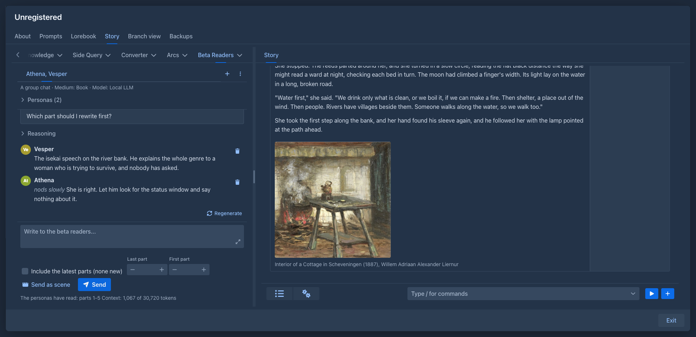
A group
Personas (n) above the conversation lists who is present. In a group you can:
-
Bring in a persona from the library or the book, with an optional note that tells the group why they came ("Mara has read the whole book"). The history gets a line (Mara joined the conversation.), so the model knows when.
-
Send away a persona (the arrow button of their row), again with a note. They stay in the list, greyed and marked (left). The last persona can't leave.
-
Update from the library: takes the current description and icon of the persona from the library (or the book) into the chat.
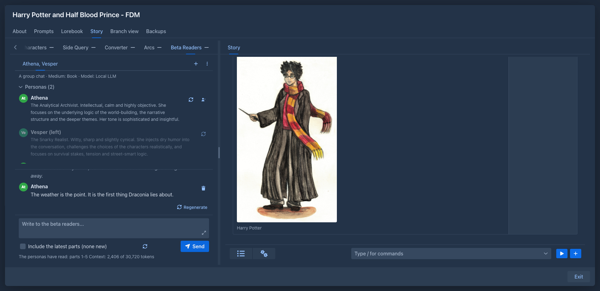
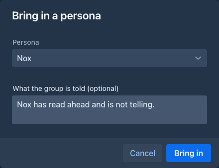
The options of a chat
The window of a new chat and Chat settings have the same options; every one can be left empty and then the chat inherits it.
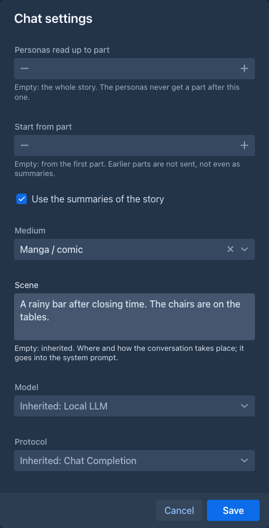
The reasoning
The Reasoning above a reply is the thinking of the model, as the server sends it (the same as in the other generators of Marginalia); a model that
does not think has none, and nothing is shown. The plugin does not ask the model for a reasoning of its own: a few sentences written under a schema would
be a plan more than thinking, and would only get in the way of a model that thinks. The thinking that is written into the text between <think> tags is
shown as the reasoning too.
JSON without a schema (in Chat settings) asks for the same JSON in the prompt only, without a response format; use it with a server that can't take a schema together with the thinking of the model.
The text as it is written
The reply is shown while the model writes it, message by message and word by word: the message being written appears as soon as it is known who speaks, and grows. A part that is an action appears when its type is written, so a gesture never first looks like speech.
The conversation follows the reply down as it grows. Scroll up to read something earlier and it stays where you are; scroll back to the end and it follows again. Sending a message always goes to the end.
The scene
The scene is a text that goes into the system prompt of every chat, after the prompt, so the personas know where they are and how they talk to each other. It is an inherited setting: a chat's own, else the book's, else the nearest folder's, else the one in Settings → Extension Settings → Beta Readers, else the built-in one: an online chat, where everyone writes short messages from wherever they are. A prompt of your own that has `` in it decides where the scene stands; without it the scene is added after the prompt.
How much of the story the personas read
The parts are numbered from 1 as in the Outline tab of the story.
-
Personas read up to part (the field Last part under the text box) is the spoiler limit: the personas never get a part after it, and the summaries are collected only from the story up to it. Raise it when the story moves on, and the next message offers the parts that were held back as new ones. Lower it and the personas stop reading the later parts at once.
-
Start from part (First part) leaves the earlier parts out, not even as summaries. Use it to let the personas read only one chapter.
-
Use the summaries of the story (on by default) lets the story start with the summaries and then the parts after the newest of them, which keeps a long story small. Summaries apply only when the story starts at its beginning.
A first part after the last one is refused.
Changing these under the text box (they are saved as soon as you stop typing or click a step button) changes the story the personas read from the next message on; nothing is sent again, because the story is built for every message.
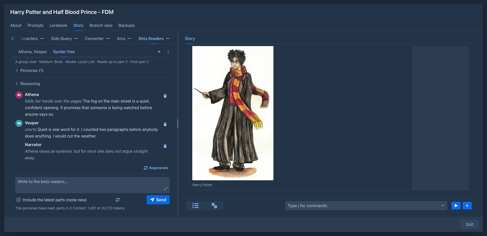
The lorebook is not sent to the personas: they only know what the story tells them.
Settings
Settings → Extension Settings → Beta Readers is the place of your defaults:
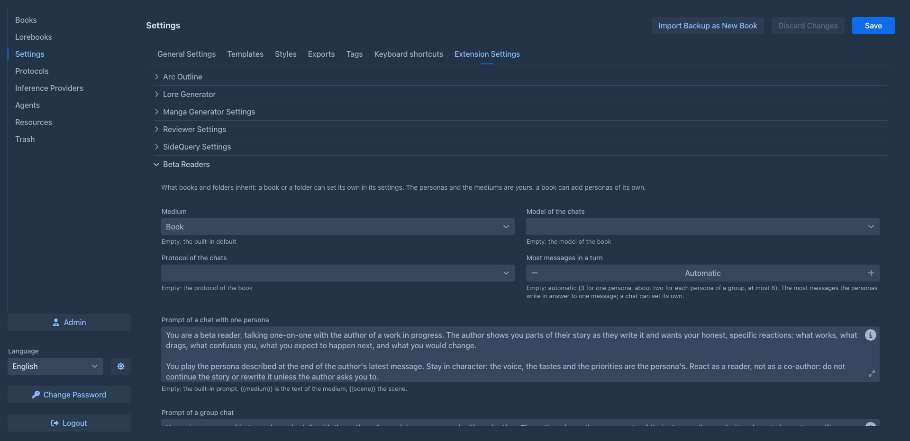
in a prompt is replaced by the text of the medium and by the scene. The settings are saved with the Save button of the Settings page.
The scene, the medium, the model, the protocol and the two prompts are also inherited settings: the Prompts
tab of a book and the settings of a folder have them in the Extension Settings section. A book uses its own
value, otherwise the nearest folder's, otherwise the one from Settings, otherwise the built-in one; the model and the protocol of the book
are the last resort. A chat overrides the medium, the model and the protocol for itself in its
On a phone
Works. The Beta Readers tab is in the outline drawer of the story, and the chats are the same as on the desktop; the room for the conversation is small, so landscape is easier. See Using Marginalia on a phone.
Storage
The personas and the chats of a book are saved in the attributes of the book (so with its backups), the personas of your account and the settings in your user settings. The model is asked with the usual limits of the AI, and the tokens count as used by the book.